Por Nilópolis, pela Baixada, pelo Rio de Janeiro.
Reeleito em 2026 · 76.706 votos
Filho do Cabuís, em Nilópolis, Rafael Nobre foi reconduzido pelas urnas: 76.706 votos em 2026, 25.143 a mais que na eleição anterior. Leis em vigor que protegem crianças, mulheres e idosos — e recursos conquistados em Brasília e no Governo do Estado para a saúde e as obras da região.
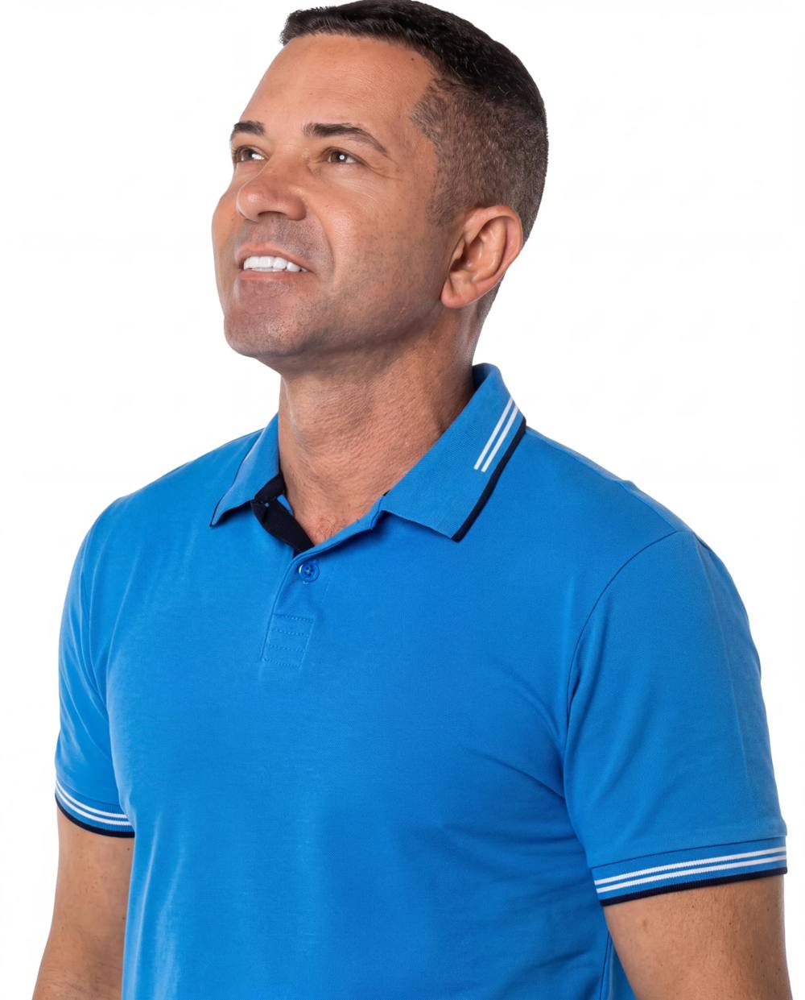
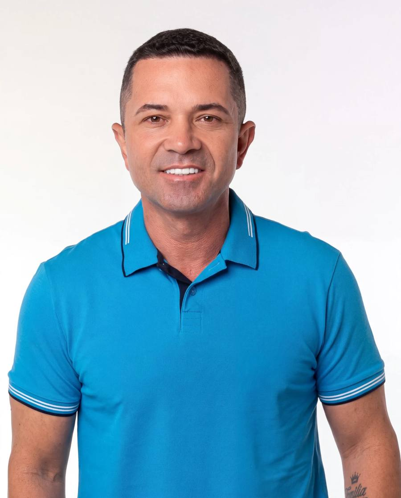
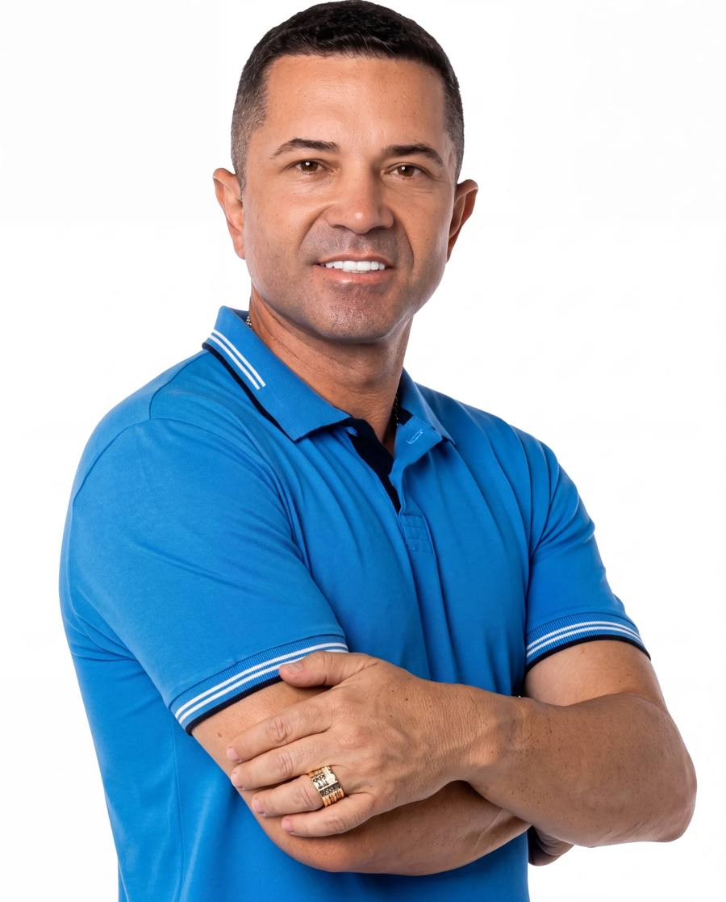
Em 4 de outubro de 2026, o Rio de Janeiro reconduziu Rafael Nobre à Alerj com a maior votação da sua trajetória. De 2.773 votos em 2016 a 76.706 em 2026: cada eleição, um degrau a mais de confiança.
de crescimento sobre 2022: foram 25.143 votos a mais na reeleição.
cadeiras na Alerj — e Rafael Nobre entre os eleitos para a legislatura 2027–2031.
aprovado nas urnas: duas vezes vereador recordista em Nilópolis, duas vezes deputado estadual pelo Rio.
Fonte: apuração oficial do TSE — eleições de 4 de outubro de 2026. Novo mandato a partir de fevereiro de 2027.
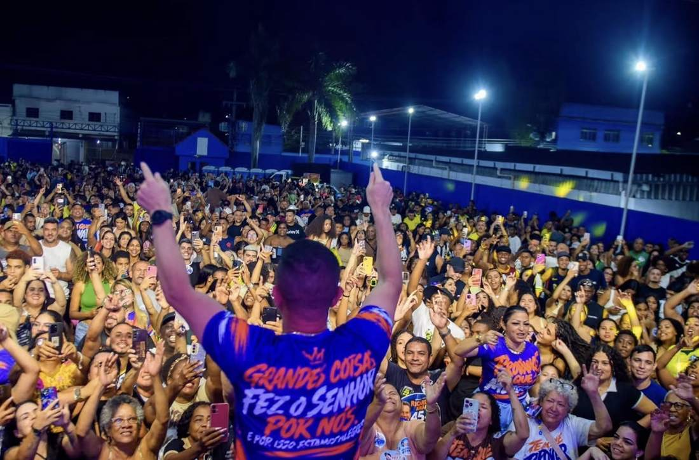
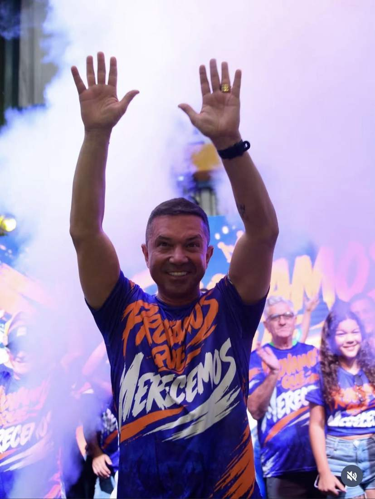
4 de outubro de 2026 — a festa da reeleição no Cabuís, onde tudo começou.
Fontes: Alerj e site oficial do mandato; resultados eleitorais: apuração oficial do TSE (2026). São ainda R$ 10 milhões em emendas parlamentares destinadas à saúde e à região.
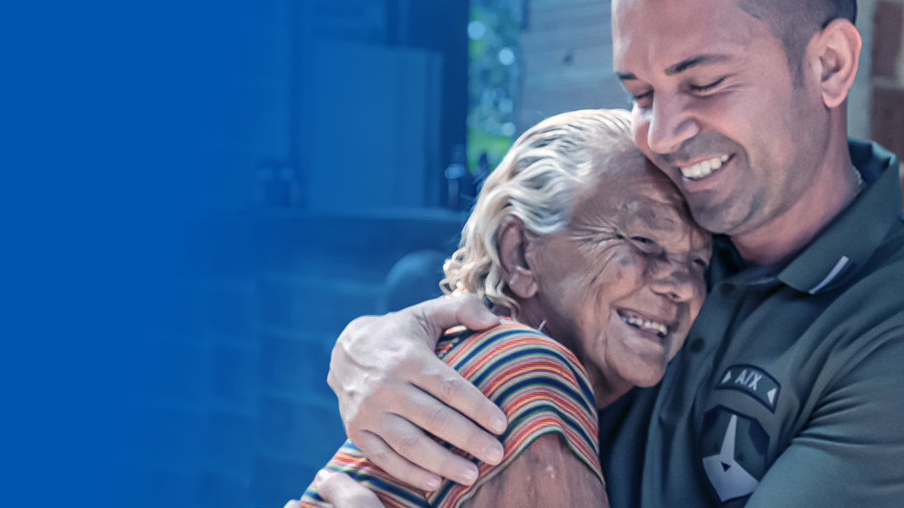
Rafael Nobre, 43 anos, nasceu e cresceu no Cabuís, em Nilópolis. Filho de Eduardo Nobre, motorista de ônibus, e de Alda Nobre, inspetora de alunos, aprendeu cedo o valor da palavra cumprida. É casado com a médica Dra. Michelle Nobre e pai de Vitória.
Em 2016, foi eleito vereador mais votado de Nilópolis, com 2.773 votos. Quatro anos depois, o trabalho virou recorde: 4.020 votos, a maior votação da história da cidade — e a presidência da Câmara Municipal, eleito por unanimidade.
Em 2022, deu o passo seguinte: 51.563 votos o levaram à Assembleia Legislativa do Rio, como o mais votado do município. Na Alerj, é titular das comissões de Educação e Defesa Civil e Segundo Vogal da Mesa Diretora. Em Brasília, conquistou emendas parlamentares para a saúde de Nilópolis; junto ao Governo do Estado, ajudou a garantir um dos maiores pacotes de obras já realizados no município.
Em outubro de 2026, as urnas confirmaram o caminho: reeleito com 76.706 votos, 25.143 a mais que em 2022 — a maior votação da sua trajetória. O segundo mandato na Alerj começa em fevereiro de 2027.
Nosso compromisso é ouvir, agir e transformar demandas em conquistas.
Candidato a deputado estadual. Não foi eleito — e não desistiu do caminho.
Eleito o vereador mais votado do município no seu primeiro mandato.
A maior votação para vereador na história de Nilópolis.
Eleito por unanimidade. Modernizou a Casa: transmissões ao vivo das sessões, novo plenário com acessibilidade, Procuradoria Geral e novas instalações.
O mais votado em Nilópolis. Na Alerj desde fevereiro de 2023, com atuação em Educação, Defesa Civil, proteção animal e defesa da Baixada.
A maior votação da sua história: 25.143 votos acima de 2022. Reconduzido à Alerj para a legislatura 2027–2031.
São 23 projetos e leis no mandato estadual — vários já em vigor no Rio inteiro. Destaques, explicados em bom português:
Programa Estadual de Adaptação de Moradias: casas adaptadas para pessoas com deficiência ou mobilidade reduzida viverem com autonomia.
Conhecer a lei Lei em vigor Lei 10.719/25 SaúdeAutoriza a criação de Clínicas Estaduais de Fisioterapia e Reabilitação Motora em todo o Estado do Rio de Janeiro.
Conhecer a lei Lei em vigor Lei 10.761/25 Defesa Civil“Morar Seguro”: política permanente de prevenção de desastres em áreas de risco, com contenção de encostas, drenagem e infraestrutura preventiva.
Conhecer a lei Lei em vigor Lei 11.026/25 CulturaInstitui o Dia do Artista da Baixada Fluminense, celebrado em 24 de outubro no calendário oficial do Estado do Rio.
Conhecer a lei Na Alerj PL 1.813/23 Inclusão“Casa do Autista”: cria o Centro de Referência da Pessoa com Transtorno do Espectro Autista no Estado do Rio.
Ver na Alerj Na Alerj PL 3.526/24 SaúdeEquipara a pessoa com fibromialgia à pessoa com deficiência, garantindo acesso a direitos em todo o Estado.
Ver na AlerjInvestimentos, obras e programas conquistados com articulação em Brasília e no Governo do Estado — para Nilópolis e toda a Baixada Fluminense.
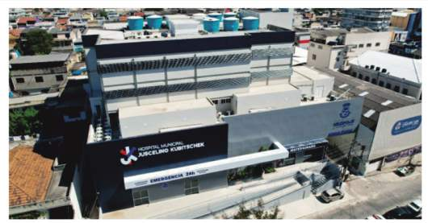
Atendimentos de volta, maternidade devolvida à população, CTI implantado e cirurgias eletivas em funcionamento.
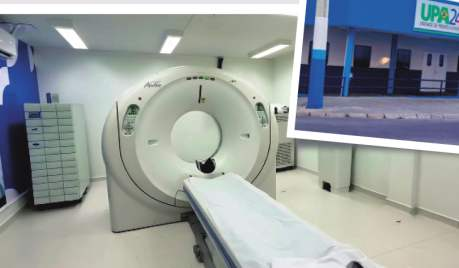
Emenda de R$ 3,5 milhões: tomógrafo de 128 canais e oferta de exames de colonoscopia e endoscopia.
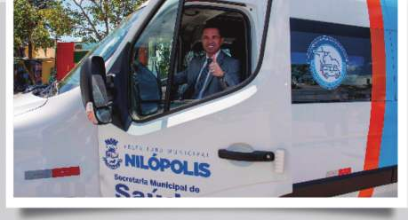
Van climatizada para 16 passageiros, conquistada por emenda parlamentar, com mais conforto e segurança.
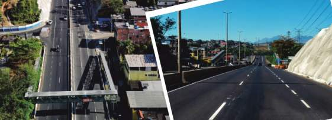
Recapeamento, contenção de encostas, iluminação em LED, novos pontos de ônibus e passarelas reformadas.
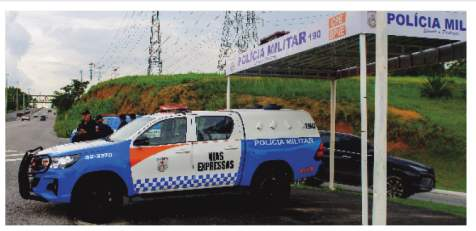
Posto avançado inaugurado e policiamento reforçado em uma das principais vias da Baixada Fluminense.
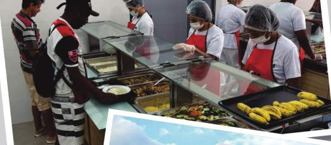
2 mil refeições por dia em Nilópolis — café da manhã, almoço e jantar por R$ 0,50 e R$ 1,00.
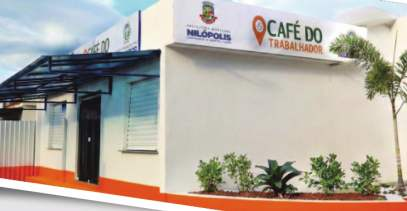
Café da manhã completo por R$ 0,50 para quem sai cedo: café ou café com leite, pão com manteiga e fruta.
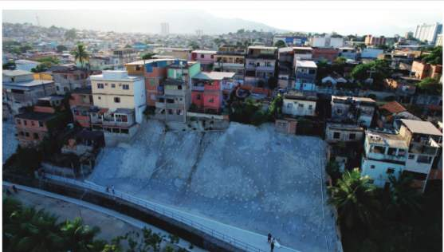
Tranquilidade devolvida às famílias e mais segurança nas áreas de risco de Nilópolis.
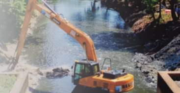
Rios Pavuna e Sarapuí desassoreados, reduzindo o risco de alagamentos em Nilópolis e região.
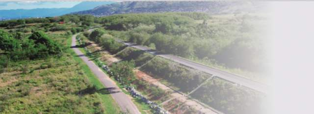
Estrutura reforçada e capacidade de escoamento ampliada: mais proteção contra enchentes.
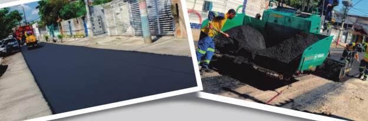
Asfalto novo, pintura viária e calçadas revitalizadas em diversos bairros, com mais mobilidade e segurança.
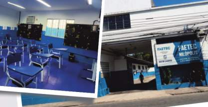
Depois de sete anos fechada, a unidade voltou a oferecer cursos gratuitos de qualificação profissional.
Titular da Comissão de Educação da Alerj. Curso de Auxiliar de Veterinário conquistado para a FAETEC de Nilópolis e projetos de preparação para o ENEM.
Autor da lei da rede de apoio à mulher vítima de violência, da “Urna do Desabafo” e da lei de combate ao bullying nas escolas.
Projeto do Dia do Atleta Idoso, proteção contra maus-tratos com comunicação ao Ministério Público e prioridade processual para idosos.
Suplente da Comissão de Proteção dos Animais, articulou a Clínica Veterinária para Nilópolis e a formação profissional na área pela FAETEC.
Recarga de veículos elétricos em condomínios, acompanhamento da dragagem do Rio Pavuna e ecobarreiras na hidrografia da Baixada.
Recursos articulados para o Hospital JK, titular da Comissão de Defesa Civil e presença constante: demanda de bairro vira ação no gabinete.
Do Cabuís para o estado inteiro. É na rua, na escola, na feira e na igreja que o mandato escuta primeiro. E é para esses lugares que o trabalho volta, em forma de lei, emenda e presença.
Mensagens, pedidos e ideias chegam de Nilópolis e de toda a Baixada Fluminense. Cada uma vira encaminhamento, indicação ou presença. Alguns exemplos ilustrativos do que chega pelos nossos canais:
Mande a sua demanda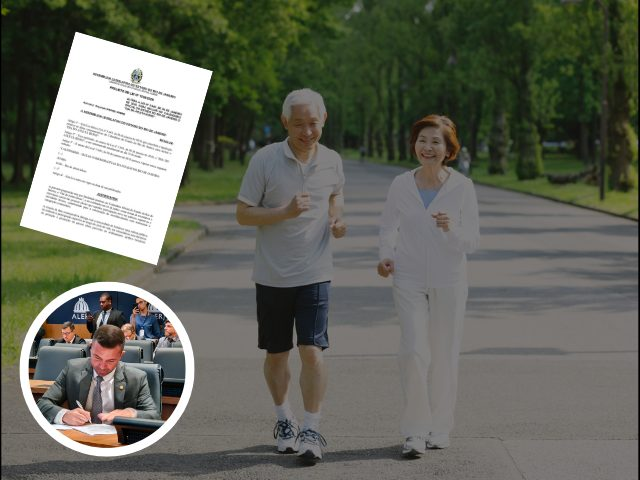
Pessoa idosa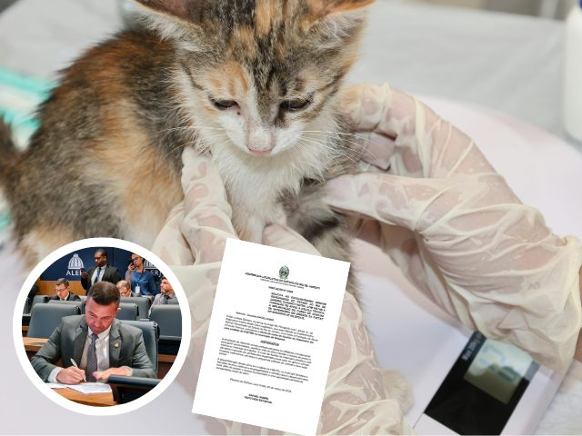
Educação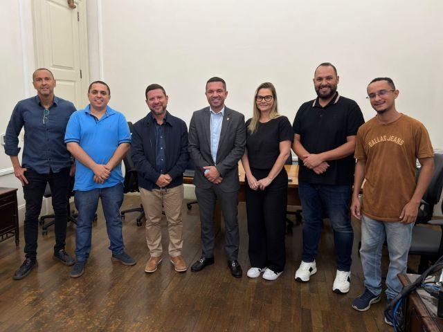
Saúde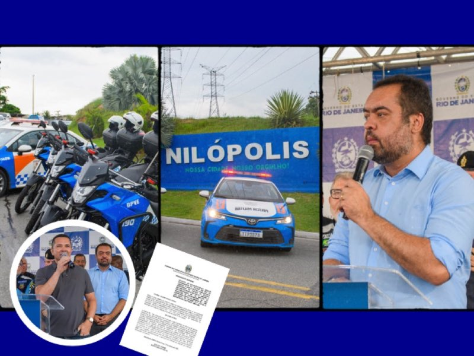
Segurança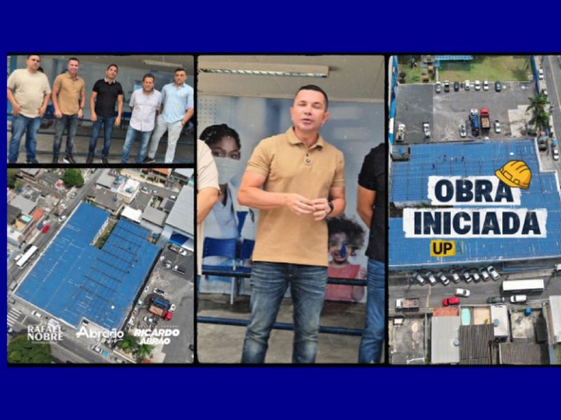
SaúdeTem uma demanda do seu bairro, uma ideia de projeto ou quer acompanhar o trabalho de perto? O gabinete está de portas abertas.